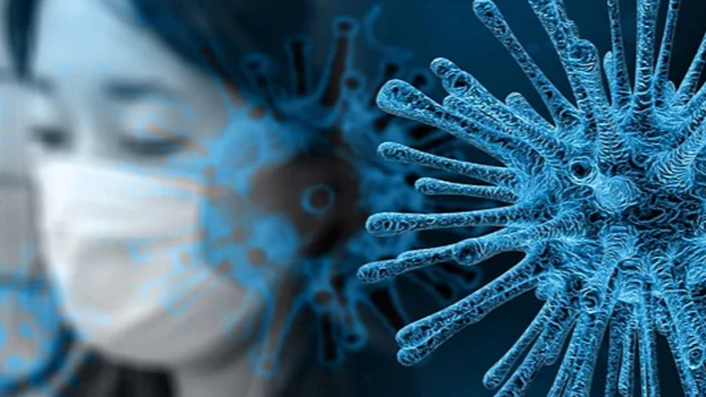
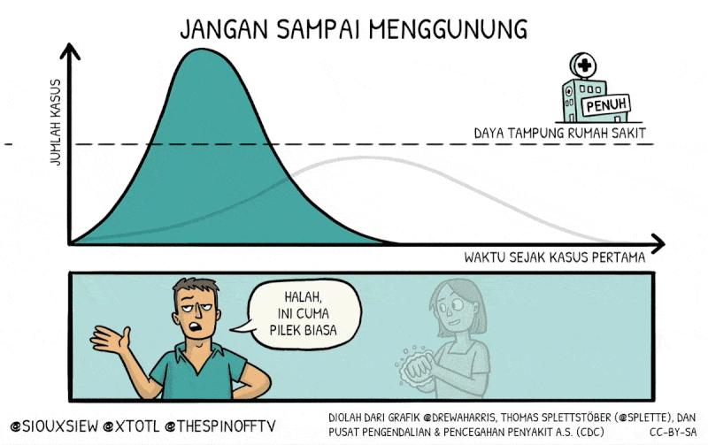
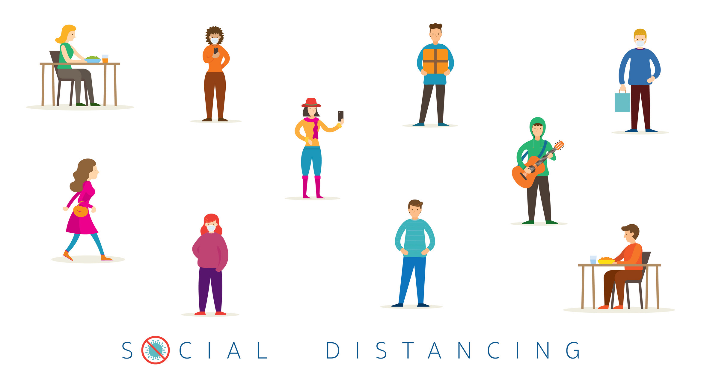
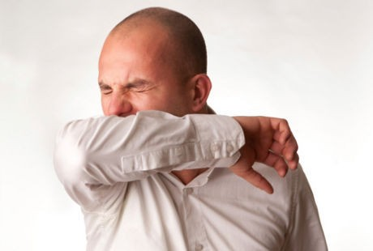
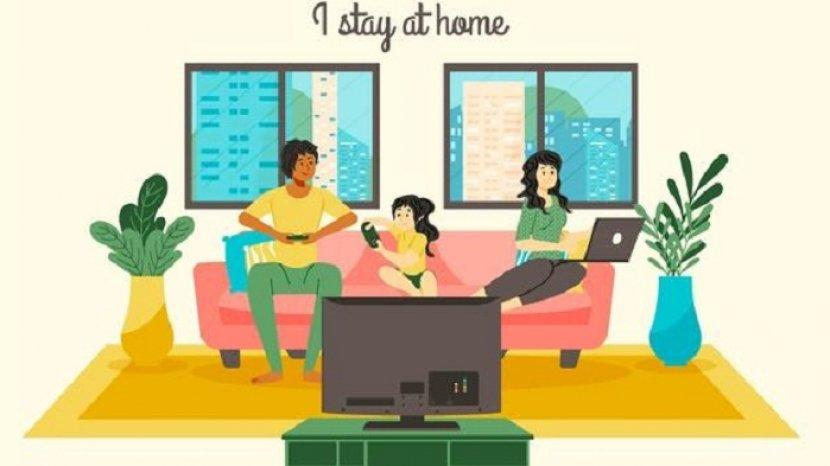

Pengertian

Coronavirus adalah suatu kelompok virus yang dapat menyebabkan penyakit pada hewan atau manusia. Beberapa jenis coronavirus diketahui menyebabkan infeksi saluran nafas pada manusia mulai dari batuk pilek hingga yang lebih serius seperti Middle East Respiratory Syndrome (MERS) dan Severe Acute Respiratory Syndrome (SARS). Coronavirus jenis baru yang ditemukan menyebabkan penyakit COVID-19.
Coronavirus disease 2019 atau biasa disingkat COVID-19 adalah penyakit menular yang disebabkan oleh SARS-CoV-2, salah satu jenis koronavirus, Virus ini merupakan virus baru dan penyakit yang sebelumnya tidak dikenal sebelum terjadi wabah di Wuhan, Tiongkok, bulan Desember 2019. Penyakit ini mengakibatkan pandemi koronavirus 2019-2020.
Penyebab

Penyakit ini disebabkan oleh koronavirus sindrom pernapasan akut berat 2 (SARS-Cov-2 atau severe acute respiratory syndrome coronavirus 2). Virus ini menyebar melalui percikan (droplets) dari saluran pernapasan yang dikeluarkan oleh orang yang terjangkit COVID-19 saat batuk atau bersin. Percikan-percikan ini kemudian jatuh ke benda-benda dan permukaan-permukaan di sekitar. Orang yang menyentuh benda atau permukaan tersebut lalu menyentuh mata, hidung atau mulutnya, dapat terjangkit COVID-19.
Penularan COVID-19 juga dapat terjadi jika orang menghirup percikan yang keluar dari batuk atau napas orang yang terjangkit COVID-19. Oleh karena itu, penting bagi kita untuk menjaga jarak lebih dari 1 meter dari orang yang sakit. WHO terus mengkaji perkembangan penelitian tentang cara penyebaran COVID-19 dan akan menyampaikan temuan-temuan terbaru.
Pencegahan

Tetap ikuti informasi terbaru tentang wabah COVID-19 yang tersedia di situs web WHO dan melalui Kementerian Kesehatan dan Dinas Kesehatan daerah Anda. Di banyak negara di dunia, kasus dan bahkan wabah COVID-19 telah terjadi. Pemerintah Tiongkok dan pemerintah beberapa negara lain telah berhasil memperlambat atau menghentikan wabah yang terjadi di wilayahnya. Namun, situasi yang ada masih sulit diprediksi. Karena itu, tetaplah ikuti berita terbaru. Anda dapat mengurangi risiko terinfeksi atau menyebarkan COVID-19 dengan cara melakukan beberapa langkah pencegahan berikut:
1. Seringlah Mencuci Tangan
 Seringlah mencuci tangan Anda dengan air bersih mengalir dan sabun, atau cairan antiseptik berbahan dasar alkohol. Mengapa? Mencuci tangan dengan air bersih yang mengalir dan sabun, atau cairan antiseptik berbahan dasar alkohol dapat membunuh virus di tangan Anda.
Seringlah mencuci tangan Anda dengan air bersih mengalir dan sabun, atau cairan antiseptik berbahan dasar alkohol. Mengapa? Mencuci tangan dengan air bersih yang mengalir dan sabun, atau cairan antiseptik berbahan dasar alkohol dapat membunuh virus di tangan Anda.
2. Jaga Jarak Setidaknya 1 meter
Jaga jarak setidaknya 1 meter dengan orang yang batuk-batuk atau bersin-bersin. Mengapa? Ketika batuk atau bersin, orang mengeluarkan percikan dari hidung atau mulutnya dan percikan ini dapat membawa virus. Jika Anda terlalu dekat, Anda dapat menghirup percikan ini dan juga virus COVID-19 jika orang yang batuk itu terjangkit penyakit ini.
3. Hindari Menyentuh Mata
 Hindari menyentuh mata, hidung, dan mulut. Mengapa? Tangan menyentuh berbagai permukaan benda dan virus penyakit ini dapat tertempel di tangan. Tangan yang terkontaminasi dapat membawa virus ini ke mata, hidung atau mulut, yang dapat menjadi titik masuk virus ini ke tubuh Anda sehingga Anda menjadi sakit.
Hindari menyentuh mata, hidung, dan mulut. Mengapa? Tangan menyentuh berbagai permukaan benda dan virus penyakit ini dapat tertempel di tangan. Tangan yang terkontaminasi dapat membawa virus ini ke mata, hidung atau mulut, yang dapat menjadi titik masuk virus ini ke tubuh Anda sehingga Anda menjadi sakit.
4. Tutup Dengan Siku Ketika Bersin
Pastikan Anda dan orang-orang di sekitar Anda mengikuti etika batuk dan bersin dengan cara menutup mulut dan hidung dengan siku terlipat atau tisu saat batuk atau bersin dan segera buang tisu bekas tersebut. Mengapa? Percikan dapat menyebarkan virus. Dengan mengikuti etika batuk dan bersin, Anda melindungi orang-orang di sekitar dari virus-virus seperti batuk pilek, flu dan COVID-19.
5. Tetaplah Tinggal DiRumah
Tetaplah tinggal di rumah jika merasa kurang sehat. Jika Anda demam, batuk dan kesulitan bernapas, segeralah cari pertolongan medis dan tetap memberitahukan kondisi Anda terlebih dahulu. Ikuti arahan Dinas Kesehatan setempat Anda. Mengapa? Kementerian Kesehatan dan Dinas Kesehatan daerah akan memiliki informasi terbaru tentang situasi di wilayah Anda.